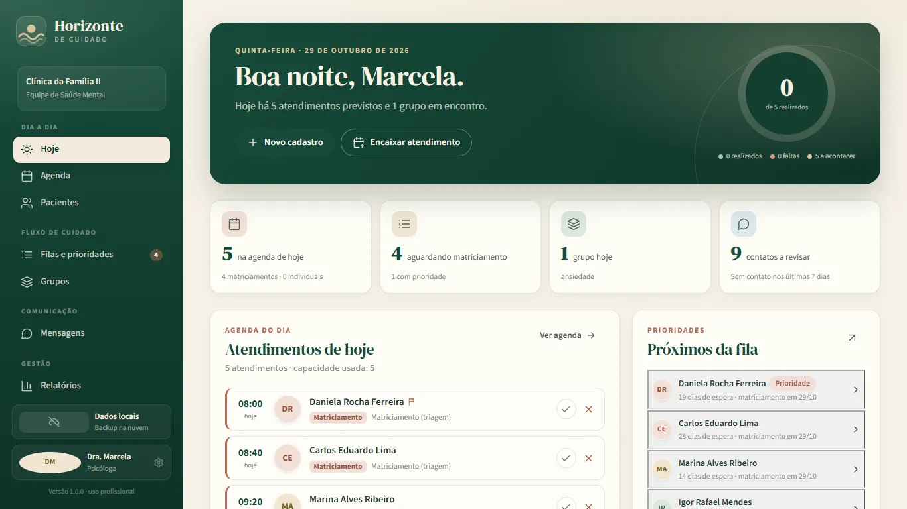
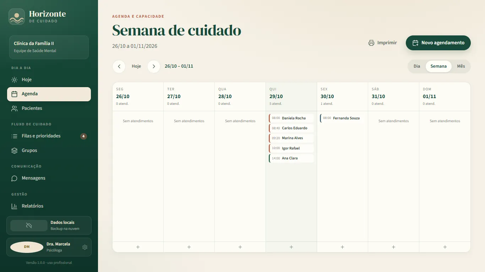
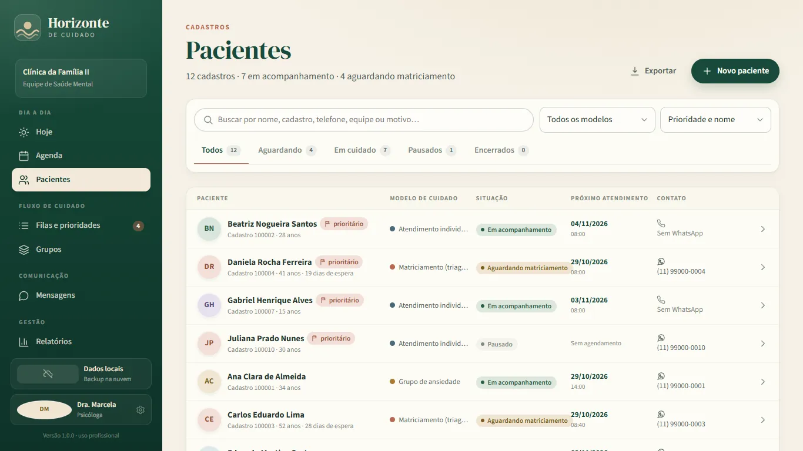
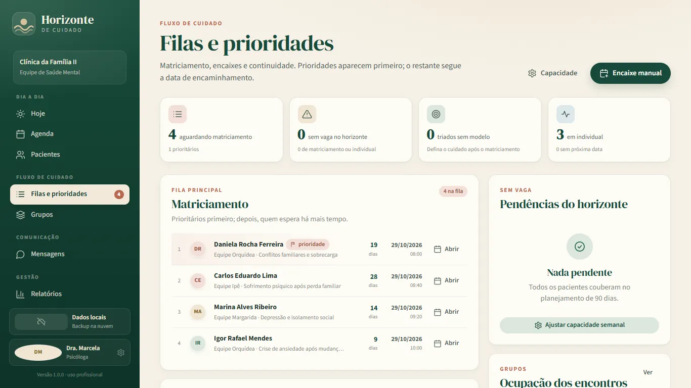
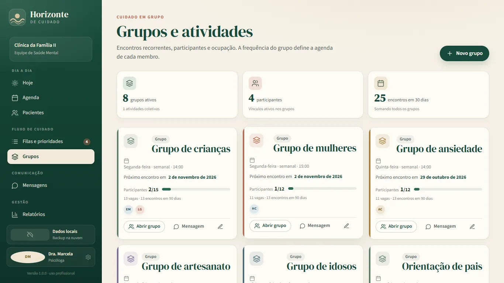
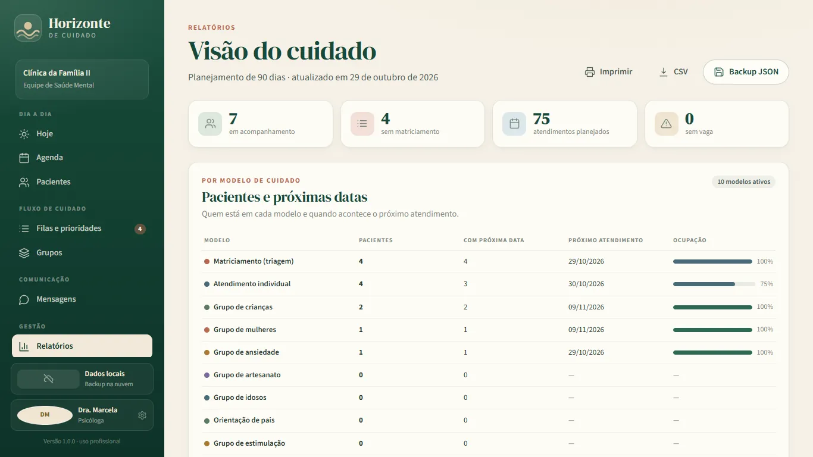
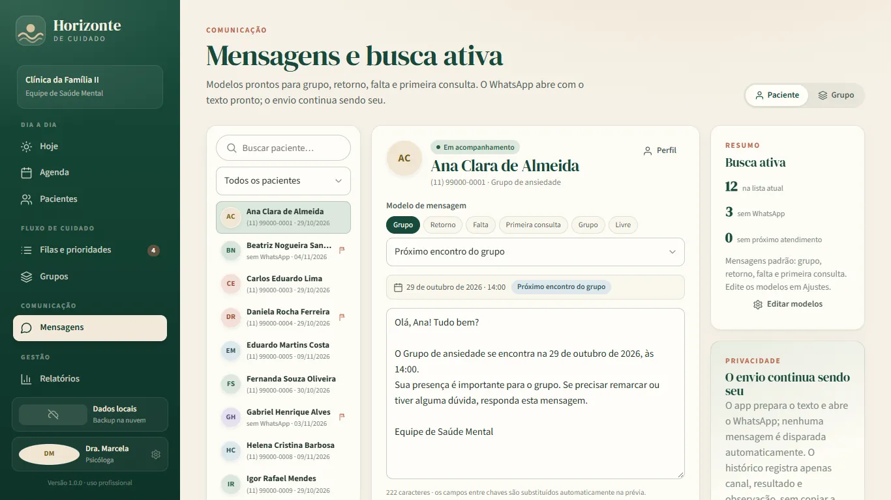
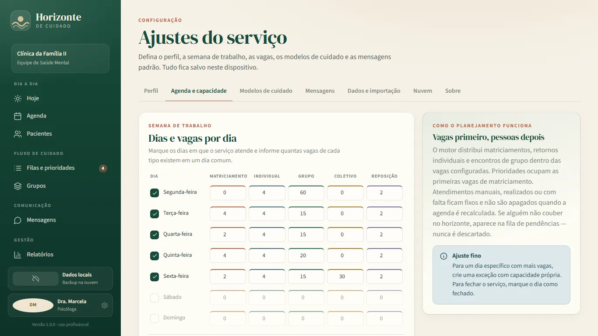
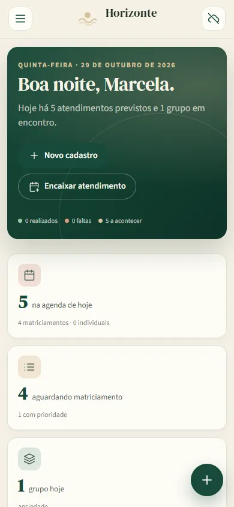

Filas que mostram o tempo
Prioridade, data de encaminhamento e espera aparecem juntas. O próximo matriciamento é sugerido, mas a equipe decide.
Apoio à organização do cuidado em saúde mental
Encaminhamentos, matriciamento, grupos, atendimentos individuais e busca ativa em uma agenda viva de 90 dias — feita para equipes que precisam enxergar o cuidado sem transformar pessoas em números.
Windows 10/11 · Android 7+ · dados no seu dispositivo · nuvem opcional

Demonstração com dados fictíciosO que é
O Horizonte de Cuidado reúne o fluxo de encaminhamentos, a fila de matriciamento, os grupos e os atendimentos individuais em um só lugar. A agenda nasce dos dias e das vagas que a própria equipe configura — e mostra o que não coube, em vez de esconder.
Prioridade, data de encaminhamento e espera aparecem juntas. O próximo matriciamento é sugerido, mas a equipe decide.
Dias de atendimento, vagas por tipo, feriados, capacidade especial e encaixes manuais preservados no replanejamento.
Texto pronto para WhatsApp, marcação de paciente sem WhatsApp e registro de cada tentativa com canal e resultado.
Uma visão de continuidade para grupos e indivíduos, com o que está sem vaga visível para a coordenação agir.
Pacientes por modelo de cuidado, próximas datas, encaminhados sem matriciamento e ocupação dos grupos.
Sem servidor próprio, anúncios ou analytics. Armazenamento local cifrado e backup opcional na sua conta Google.
Por dentro
Capturas reais do aplicativo com dados fictícios. Cada tela foi pensada para uma decisão operacional: o que acontece hoje, quem espera, onde há vaga e o que precisa de contato.








Também no celular e no tablet
A interface é responsiva e mantém o essencial à mão quando você está em trânsito ou entre atendimentos.
Como o cálculo funciona
O planejamento é determinístico: as mesmas entradas produzem a mesma sugestão. Você consegue explicar por que uma pessoa ficou em determinada data — e corrigir a regra quando a realidade mudar.
A ideia em uma frase
Atendimentos manuais, fixos, concluídos ou faltas ficam preservados. Se não houver vaga dentro do horizonte, a pessoa aparece em “sem vaga” — não é descartada nem escondida.
O resultado é uma sugestão operacional. A decisão clínica, a avaliação de risco e a prioridade final continuam sendo da equipe profissional.
Limites claros
A ferramenta organiza o cuidado; ela não substitui o cuidado. Estes limites são parte do produto, não uma nota de rodapé.
Em emergência, não use este aplicativo para pedir ajuda. Acione o SAMU (192), o serviço de emergência local, o CAPS/CAPS AD de referência ou a rede de proteção.
Compatibilidade
Há pacotes para Windows/MSIX e Android. A versão web serve para demonstração; a nuvem é uma função dos aplicativos instalados.
Privacidade e Limited Use
O aplicativo não tem servidor próprio, não vende dados, não exibe anúncios e não usa
ferramentas de analytics. O caderno fica no dispositivo, cifrado com AES-GCM. O backup
no Google Drive é opcional e usa a pasta privada appDataFolder da sua conta.
O acesso ao Drive é limitado ao escopo drive.appdata. O app não lê os demais
arquivos, não compartilha arquivos e não usa o conteúdo para publicidade. O token fica
protegido por DPAPI no Windows e no Android Keystore no Android. O usuário pode
desconectar a conta a qualquer momento.
Google API Services — Limited Use. O uso de informações recebidas das APIs do Google obedece à Google API Services User Data Policy, incluindo os requisitos de Limited Use. Os dados são usados somente para fornecer o backup e a sincronização do caderno; não são vendidos, não são usados para anúncios e não são lidos por pessoas, exceto por necessidade de segurança, cumprimento de lei ou consentimento explícito.
Leia a Política de Privacidade completa para saber quais dados são tratados, por quanto tempo e como exercer direitos LGPD/GDPR.
Documentos
Os documentos são públicos, sem login, e valem para a versão 1.0.0 do aplicativo.
Precisa de ajuda com instalação, backup ou importação? Consulte a página de suporte.
Perguntas frequentes
Não para as funções locais. Cadastro, agenda, filas, grupos, mensagens e relatórios funcionam offline. A nuvem e o backup no Google Drive dependem de internet e do aplicativo instalado no Windows ou no Android.
Não. Ele prepara o texto e abre o WhatsApp com a mensagem. O envio continua sendo um ato humano. O histórico registra canal, resultado e observação, sem copiar a conversa.
No armazenamento local do dispositivo, cifrados com AES-GCM. Se você conectar uma conta Google, o app também envia backups para a pasta privada appDataFolder do seu Drive. Não há servidor próprio do projeto.
Não. É uma ferramenta de organização de encaminhamentos, filas, agenda e comunicação. Não substitui o prontuário, o registro clínico oficial, o protocolo da instituição ou o julgamento profissional.
A fila de matriciamento ordena primeiro os pacientes marcados como prioritários e, depois, pela data de encaminhamento. A próxima vaga de triagem é sugerida respeitando essa ordem e a capacidade configurada. A equipe decide os critérios e pode ajustar o caso.
Sim. O importador aceita as colunas A–J da planilha (nome, cadastro, idade, telefone, data, motivo, equipe, triagem, modelo e observações) e mostra um resumo para conferência. Nomes, telefones e datas devem ser revisados antes de usar. Dados reais nunca são publicados no repositório.
Os dois têm recorrência e entram na agenda. O grupo tem participantes vinculados e limite de capacidade; a atividade coletiva pode ser aberta e serve para oficinas, rodas ou ações comunitárias.
Baixe o pacote .msix e o certificado público .cer da mesma versão. O certificado de teste precisa ser confiável no computador; em muitos ambientes isso exige administrador. Depois, abra o .msix. Em produção, a Microsoft Store reassina o pacote.
A versão Android está em preparação para o Google Play, com o pacote horizonte.de.cuidado, para Android 7.0 ou superior em telefone ou tablet. Quando publicada, instale pela ficha da loja; não é necessário instalar certificado nem ativar fontes desconhecidas. O login no Drive usa o seletor nativo de contas do Android.
Sim, com o backup opcional no Google Drive. Cada dispositivo envia operações separadas; edições concorrentes são preservadas para decisão do usuário, em vez de sobrescrever uma à outra. Sem nuvem, use exportação/importação JSON.
Na versão web, o caderno fica no localStorage e pode ser apagado ao limpar dados do site, usar navegação privada ou trocar de perfil. Exporte um JSON ou use o backup no Drive antes. Sem backup, não é possível recuperar o conteúdo local.
English
Horizonte de Cuidado is a Windows/MSIX and Android organizer for mental-health teams. It
brings referrals, triage queues, recurring groups, individual appointments, WhatsApp-ready
messages and 90-day planning into one place. It is an independent support tool — not an
electronic health record, official government system or medical device. Patient data
stays on the device, encrypted locally; Google Drive backup is optional and uses the
user's own account with the drive.appdata scope. Clinical decisions always
remain with qualified professionals.
Baixe o aplicativo
Pacote MSIX 1.0.0.0 para Windows x64, com dados fictícios de demonstração. O backup opcional no Google Drive usa a conta do próprio usuário, com escopo mínimo e consentimento explícito; todas as funções locais continuam disponíveis sem login.
.msix e o certificado público .cer..msix e conclua a instalação.A demonstração web usa dados fictícios e não acessa o Google Drive. Os pacotes Windows e Android são as versões completas para uso local com backup opcional. Certificado de teste, uso local: a Microsoft Store reassina o pacote em produção. Não instale certificados de origem desconhecida. Em ambiente institucional, prefira Intune/GPO ou a Store. A versão Android será distribuída pelo Google Play.